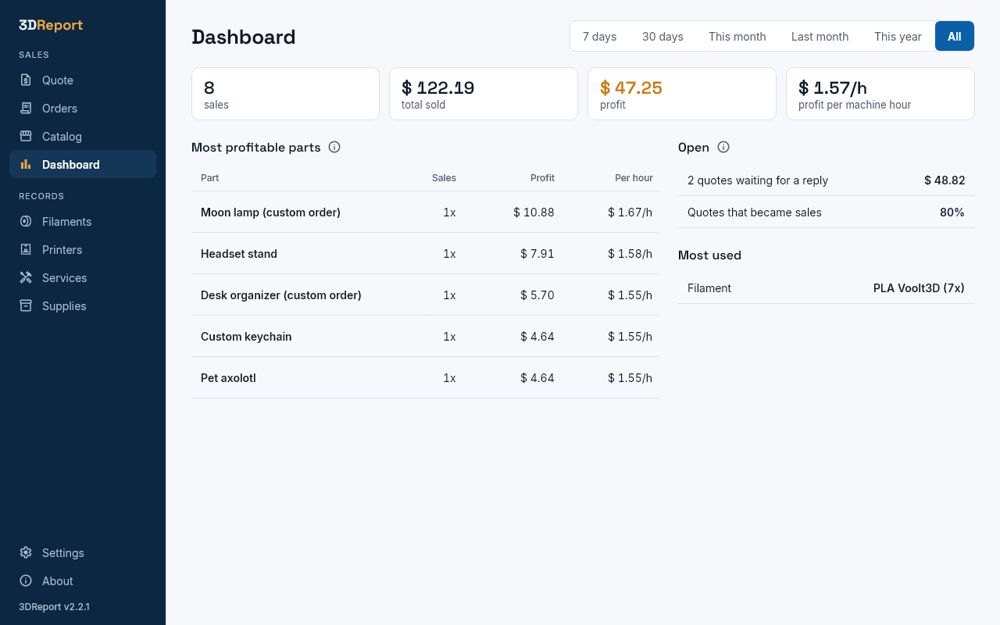
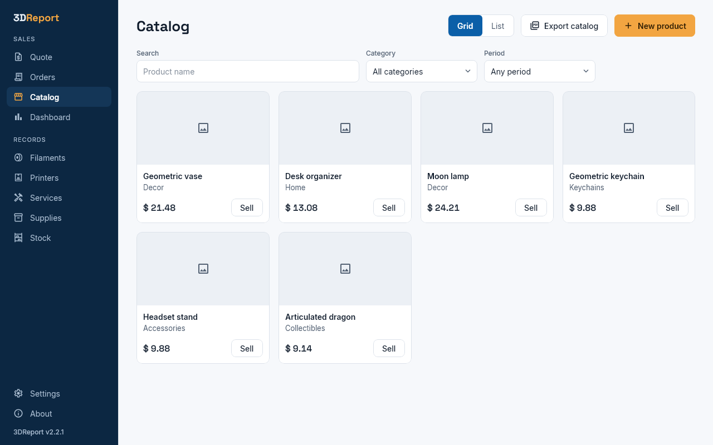
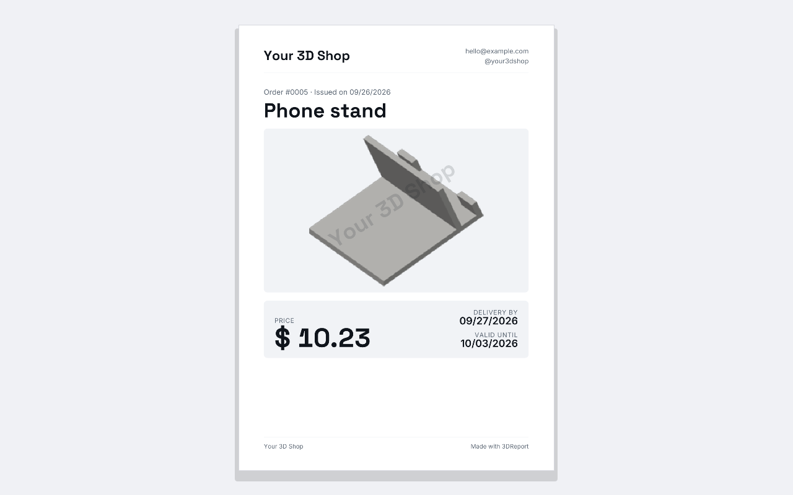

The system for people who sell 3D prints
From the right price to the delivered part, in one app and with no monthly fee
Drag in the G-code and your 3D printing quote builds itself from the real cost: filament, energy, machine, your own time, tax and the fee of each sales channel. Send it to the customer on WhatsApp or as a PDF with your brand, negotiate without losing money and follow every order to delivery. Free, open source and 100% on your computer: your prices and your customers never leave your machine.
See 3DReport in action
From the dragged-in G-code to the delivered order, across every screen of the app.
The video opens through YouTube, without cookies, only after you click.
Inside the app
From the quote to the delivered order, including what goes to the customer. Click an image to see it full size.








Built for people who sell 3D prints every day
It is not just a calculator: it follows the whole sale, from the G-code that comes out of the slicer to the PDF that goes to the customer and the delivered order.
Drag in the G-code and you are done
Drop the slicer file into the window: length, time, photo and print settings are filled in for you, and the printer and filament are already selected when they match what you saved. Works with Bambu Studio, OrcaSlicer, PrusaSlicer and Cura.
The real cost
Filament, supplies (key rings, magnets, boxes), energy, maintenance, the printer's return on investment, the fixed cost of the business, your own working time and a failure reserve. Sales tax or VAT and the fee of each channel (Etsy, eBay, Amazon, card), including the fixed amount per item, are already in the price.
See where the money goes
Next to the price, a bar shows how much is material, energy, machine, your work, failure reserve and profit. It is clear where to cut when the customer says it is too expensive.
Negotiate without losing money
Type the price the customer offered and see at once what is left: profit, margin and a warning when the value does not cover the cost. The minimum price is always in view, and the Dashboard adds up how much discount you gave.
Delivery dates you do not lose track of
Pick the date with one click (+3, +7 or +15 days) while seeing how much print time is already queued on the machine. It stands out for the customer, and the app warns you when an order runs late.
Ready to send on WhatsApp
Open the customer's chat with the quote already written, or make a square image with photo, price and delivery date to send in a chat or post as a story.
PDF with your brand
A single quote, several in one PDF or a grid catalog, with your logo and contact in the header, plus an optional border and watermark. You can check how it looks before saving.
From quoted to delivered
Orders with search and filters, a Kanban by status, each printer's queue and maintenance, and a Dashboard with sales, profit per hour and the parts that earn the most in the period.
A catalog that talks to the quote
Printers with presets of the main brands, filaments with brand, type, colors and stock per color, services like painting, sanding and delivery (with the amount of each order, per part or once), and sales channels with the fee of each.
3D viewer and difficulty level
Attach the model's STL to rotate and zoom inside the app, capture a photo for the quote and see a suggested difficulty level (Easy, Medium or Hard) to price complex parts.
100% on your computer
No account, no monthly fee and no required internet. Your prices and your customers are your business, and they stay with you.
Really free
No paid plan, no "pro" version and no limit on quotes. The app is open source and lives on voluntary support.
Your data stays with you
Everything lives in a folder on your computer. One click makes a backup file, to take to your laptop or keep before you reformat.
Any currency, any country
Your own sales channels with their fees, a tax rate you set, free shipping and delivery dates, and your own currency on each quote.
From quote to finished sale
3DReport does not stop at the price: it follows the sale of a 3D print from the first contact with the customer to the delivered part.
Customer linked to the quote
Name and contact are saved with each sale, ready to look up later in the history.
Order status
Update the progress of each sale right in the list, with no side spreadsheet to track who has paid or received.
Sales dashboard
How much you sold, how much each machine hour and work hour earned and which parts are worth repeating, filtered by period. It only counts what the customer approved.
How the calculation works
A transparent formula, no black box. Full details and a worked example are in docs/pricing-formulas.md (in Portuguese). Want to try your own part's numbers right now? Use the free online calculator.
Installation
Native installers, built for each release, for the three desktop operating systems.
Download the .msi from the releases page. Windows may warn "Unknown publisher": click "More info" and then "Run anyway".
Download the .deb from the releases page and install it as usual with your system's package manager.
Download the .dmg from the releases page. If opening is blocked, try right-clicking the app and choosing "Open". If that does not work (common on recent macOS versions), go to System Settings, then Privacy & Security, and click "Open Anyway" on the notice about the blocked app.
Frequently asked questions
How much does 3DReport cost?
Nothing. It is free and open source, with no paid edition and no subscription. The project is kept going by voluntary donations.
How does 3DReport price a 3D print?
From the filament used (price per kg, density), the printer profile (energy use, maintenance, return on investment) and your business settings (energy price, monthly fixed cost, the value of your hour, failure reserve and profit margin), the app works out the production cost and suggests a sale price with the margin you want.
Does the app charge for my working time?
It does, if you want it to. In Settings you enter what your hour is worth, and in each quote you enter how many minutes that order took you: preparing the file, slicing, taking the print off the bed, removing supports, sanding, painting, packing. This is the cost that most often goes missing when people sell 3D prints, because the machine works alone but everything else is you. Entering your hourly rate only adds to the price. If you already count sanding and painting in those minutes, leave the finishing rate at 0 so you do not charge twice.
Do I have to type the filament length and print time of each part?
No. Drag the G-code exported by your slicer into the app window (or use the import button): filament length, print time, part photo and print settings are filled in for you. If the printer name and filament type in the G-code match what you have saved, they are selected too; when they only look similar, the app suggests and you confirm. It works with Bambu Studio, OrcaSlicer, PrusaSlicer, SuperSlicer and Cura (in Cura, only the printer, because Cura does not write the filament).
Can I quote several identical parts at once?
Yes. Enter the quantity in the quote and the app multiplies the cost of each part, showing the total and the price per unit. You enter your working time for the whole order, and slicing or setting up the plate does not grow with the number of parts, so the price per part drops in a batch without an invented discount. The filament length and print time you enter are for one part; if you sliced a full plate in one go, leave the quantity at 1.
Which operating systems does 3DReport run on?
Windows, Linux and macOS, with a native installer for each.
Where are my quote data saved?
Locally, on your computer. 3DReport does not send any data to outside servers.
Does the site collect any data from visitors?
Only a visit count, through GoatCounter: how many people opened each page and where they came from (a video, a post, a search). No cookies, no tracking across sites and no personal data stored. This applies to this site only: the app sends nothing anywhere.
Is 3DReport only for one-off quotes, or also for running a 3D printing business?
Both. Besides the quote calculation, each sale has a customer and an order status (Quoted, Approved, Printing, Ready, Delivered) and goes into the history and the dashboard, with total sold, accumulated profit and most used filament by period.
What does the "difficulty level" mean when I attach an STL?
When you attach the model's STL file, 3DReport analyzes the 3D mesh and suggests a level (Easy, Medium or Hard) by combining four signals: how far the shape is from something smooth and compact (like a sphere) for the same volume, how much surface hangs in the air and needs support (overhang), how many triangles the mesh has, and whether the file has several loose parts. It is a geometric estimate (it does not simulate the slicer) to help you decide whether to charge an extra margin for more demanding parts, and the pricing decision stays yours. The formulas are in docs/pricing-formulas.md (in Portuguese).
How does the app handle marketplace fees, tax and shipping?
The sales channel fee (Etsy, eBay, Amazon, card) and the tax come out of what you receive, so the app raises the price just enough for your margin to stay the same, and the profit it shows is already net. A marketplace and a payment method are a single field on purpose: adding the Etsy fee to the card fee would charge you twice, because the marketplace already includes payment processing. If you pay a flat monthly tax instead of a percentage, put it in the monthly fixed cost, not in the tax field. Services and shipping appear as their own lines in the total and do not go through your margin, but the marketplace and the tax charge on them too: the app includes that part in the price of the print, so you do not pay the fee out of your own pocket. A channel can also have the fixed amount per item that marketplaces like Etsy and eBay charge, with price tiers if you need them. And if you offer free shipping, mark that you pay for shipping: the customer sees "Free shipping" and the cost comes out of your profit.
Can I know how low I can go in a negotiation?
Yes. The app always shows the minimum price, the value below which the sale starts to lose money, after the channel fee and tax. You can also type the price the customer offered to see at once how much profit and margin is left, with a red warning if the value does not cover the cost. The agreed price becomes the real value of the quote, so your history and your revenue keep matching what you actually charged. And the Dashboard adds up how much discount you gave in the period.
How do I send the quote to the customer?
Whichever way is easiest for you. The app exports a formal PDF, copies a short text to paste into any chat, opens the customer's WhatsApp with the quote already written, or makes a square image with photo, name and price to send in a chat or post as a story. If you set a delivery date, it stands out in all of them, and the app warns you before you send a date that has already passed. They only show what belongs to the customer: production cost, profit and the model link stay internal to you.
Does any 3DReport branding show up on the PDF I send to customers?
Only one small, faded line, "Made with 3DReport", in the bottom corner of the PDF (with a link to the app's site) and of the square image. It sits far from your name, your logo and the price, and it does not appear in the text message. The app is free and has no ads: that line is how other sellers get to know 3DReport, and it is what keeps the app going.
Is there an Android or mobile version?
Not yet. It is a possibility on the roadmap, with no date.
Support the project
3DReport is and always will be free and open source. If it helps you price your 3D printing business better, please consider a voluntary donation.